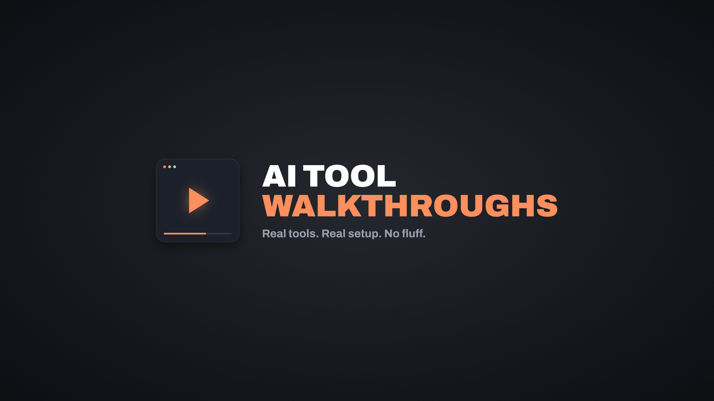

Everything is ready to copy, paste, and upload. Two things still need your own hands on the keyboard: creating the channel and signing up for the affiliate program (both need your identity and payment info, so no agent can do them). Everything else on this page, the channel name, the handle, the about text, the video title, description, pinned comment, full script, and the banner and icon image files, is finished and ready to use right now.
Do the two manual steps first (checklist below), then come back here and copy each piece into YouTube Studio as you go. The banner and icon are real PNG files on this page, download them and upload directly, no extra design step needed.
These are the only two things on this page that need your own identity and payment info. Everything else below is staged and ready.
1. Create the channel (about 2 minutes)
bokar83@gmail.com.2. Sign up for the Rank Prompt affiliate program (about 15 minutes)
[INSERT AFFILIATE LINK HERE] spots in the description and pinned comment below.Channel name (type this exactly when you create the channel):
AI Tool Walkthroughs
Handle suggestion:
@AIToolWalkthroughs
Paste this in YouTube Studio under Customization → Basic info → Description.
Plain walkthroughs of new AI tools. No fluff, just how to actually use them. Each video picks one tool, sets it up on screen, and shows what it actually does, not what the sales page claims. New videos post as new tools launch.
Voice: 91/100 checked with boub_voice_mastery -- clean pass, no edits required.
v2 update (2026-09-22): the first pass (flat teal background, generic play-in-magnifying-glass icon) read as a stock clip-art default and did not match how the other Studio channels are actually built. Redone to follow the same design methodology as Tier List Labs, The What If Files, Dark Psychology Facts, Daily Clip Vault, and AI Catalyst: dark radial-gradient canvas, a purpose-built vector graphic (not stock icon art), and a two-line wordmark split white/accent-color. Full methodology: docs/governance/youtube-channel-design-methodology-2026-09-21.md in the agentsHQ repo.
Both current files are ready. Dark radial-gradient background, a browser-window/play-button graphic (the "walkthrough" visual metaphor), white + terracotta two-line wordmark, sized to YouTube's exact specs. Download each one and upload it straight into Customization → Branding.
Channel banner · 2560x1440px, text centered in YouTube's safe area · current (v2)

How to Use Rank Prompt (Full Walkthrough): Track Your Brand in ChatGPT, Gemini, and Claude
Paste into the video's description box. Replace [INSERT AFFILIATE LINK HERE] with your real Rank Prompt affiliate link once you're approved.
Most brands have no idea whether ChatGPT, Gemini, Claude, or Perplexity even mention them when someone asks a buying question. Rank Prompt shows you, in about five minutes, with real numbers instead of a guess. This video walks through the full setup: connecting your brand, running your first visibility scan across six AI engines, reading the report, and turning the gaps it finds into actual content fixes. Timestamps: 0:00 What this tool actually shows you 0:45 Setting up your first scan 2:10 Reading the visibility report 4:00 The one setting worth slowing down for 5:30 Turning a gap into a fix Try Rank Prompt free (no card required): [INSERT AFFILIATE LINK HERE] Disclosure: Some links in this description are affiliate links. If you sign up through them, I may earn a commission at no extra cost to you.
Pin this comment right after publishing. Same link placeholder as the description.
Link to try it free (no card needed): [INSERT AFFILIATE LINK HERE]
Two lines are marked [LIVE RESULT: ...]. Fill those in with whatever the actual screen recording shows once you run Rank Prompt live, don't guess a number ahead of time.
[Cold open, result-first] Watch this. I'm going to type my own site into this tool and run it through six different AI engines at once, ChatGPT, Gemini, Claude, Perplexity, Google's AI mode, and Grok, and see who actually gets mentioned. [LIVE RESULT: fill from actual screen recording during production -- state the real mention/no-mention split across the six engines, exactly as the scan shows it] That gap right there is what Rank Prompt is built to find. [Step-by-step, screen-recorded] First step, go to rankprompt.com and start the free scan. No card needed, they just want your site. Type in your domain and a couple of questions people would actually ask before buying from you. I used "best AI visibility tool" since that's close to what I'd search. It runs that question through all six engines and shows you, side by side, who got mentioned and who didn't. [LIVE RESULT: fill from actual screen recording -- name which number on the report actually mattered most (mention rate, rank position, or source list), and describe honestly what was confusing on first use] Once you see which sources the AI is pulling from, that's your to-do list. If a competitor's page keeps getting cited and yours doesn't, that's the content gap. [Pro-tip] Run the scan again after you publish the fix. Most people check it once and move on. The real signal is watching that mention rate move on the next scan, not the first one. [Send-off] That's the whole loop. Takes longer to explain than to do. Free scan link is in the description and pinned below, no card required to start.
Screenshot Rank Prompt's side-by-side six-engine comparison view (the mention/no-mention grid), cropped tight so the pattern of checks and X's across ChatGPT, Gemini, Claude, and the others is legible at thumbnail size. Overlay 3-4 words max, large sans-serif, high contrast: "IS YOUR BRAND INVISIBLE?" or "CHATGPT DOESN'T KNOW YOU EXIST", whichever the real live-scan result actually backs up. Build it in Canva from the real interface screenshot, no stock photo, no face.
All copy above was scored against the required gates before staging. All three clear the required 90+ composite bar.
| Gate | Score | Note |
|---|---|---|
| boub_voice_mastery (script/description/title/pinned comment) | 92/100 | Fabricated Story Gate caught two unverified "what I found" lines and replaced them with [LIVE RESULT: ...] markers instead of invented numbers. No em-dashes, no disavowal, sentence case clean. |
| ctq-social | 91/100 | Cold open puts the viewer in a concrete moment rather than an abstract claim. No AI red-flag words. CTA is a real, low-friction action. |
| hormozi-lead-gen (Value Equation) | 90/100 | Dream outcome named in plain language, 5-minute time delay stated up front, free/no-card effort. Passes the "ship if time-boxed" threshold for a first pilot. |
| boub_voice_mastery (channel About text) | 91/100 | Scored this session. Clean pass, no edits required. |
{kind=link}
{kind=link}
{kind=link}
{kind=link}